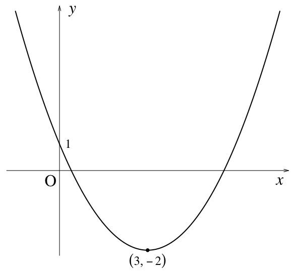

ここでいう高校数学のグラフとは次のようなものである。

これは y = x2 + 4x + 1 のグラフである。
こういったグラフをRで描くには，凝らなければ，次のようにすればよい。
curve(x^2-4*x+1, xlim=c(-1,5))
ここで xlim=c(-1,5) は x が -1 から 5 までの範囲で描くという意味である。xlim=... を省略すれば適当に見繕ってくれるが，この場合はあまりうまくいかない。
とりあえずx軸とy軸を書き加えてみよう。
abline(h=0)
abline(v=0)
h，v はそれぞれhorizontal（水平），vertical（垂直）の意味である。まとめて abline(h=0, v=0) としてもよい。
もっと高校数学っぽくするために，最初から書き直してみよう。軸（axes）を消して，x軸のラベル（xlab）もy軸のラベル（ylab）も空にして，線の幅（lwd）を通常の2倍くらいにしてみる。
curve(x^2-4*x+1, xlim=c(-1,5), axes=FALSE, xlab="", ylab="", lwd=2)
座標軸は矢印で描く。
arrows(-1.2, 0, 5.2, 0, length=0.1, angle=15)
arrows(0, -3.2, 0, 6.2, length=0.1, angle=15)
あらかじめフォントをTimes系に指定しておく：
par(family="serif")
デフォルトでは serif はMacでは Times-Roman，Windowsでは TT Times New Roman の別名である。詳しくは quartsFonts() または windowsFonts() と打ち込んでみればわかる。
x，y はイタリック体で，原点 O（ゼロではなく大文字のオー）は立体（ローマン体）で描くのが日本の高校数学の流儀である。いずれも x 座標と y 座標を指定して，文字サイズ（cex）は通常の2倍にしてみた。
text(5, -0.4, expression(italic(x)), cex=2)
text(0.3, 6, expression(italic(y)), cex=2)
text(-0.2, -0.4, "O", cex=2)
なお，フォントファミリは次のように個々の場合に指定してもよい：
text(5, -0.4, expression(italic(x)), family="serif", cex=2)
ついでに y 切片も。
text(0.2, 1, 1, cex=1.5)
最小値をとる点に黒丸を付けて，座標も書き込む。グラフ描画範囲から外れた部分がクリッピングされないようにオプション xpd=NA を付けた。
points(2, -3, pch=16)
text(2, -3.4, "(3, -2)", cex=1.5, xpd=NA)
ただし "(3, -2)" ではマイナスの符号が短いハイフンになってしまう。これを防ぐ一つの方法は，マイナスの符号を表すUnicode番号 \u2212
を使って "(3, \u22122)" とすることである。あるいは，
text(2, -3.4, expression((list(3,-2))), cex=1.5, xpd=NA)
のような式（expression）にする。式の中にコンマが入るとエラーになるので，中身をコンマ付きで出力する命令 list を使った。
Last modified: 2011-06-27 12:45:26